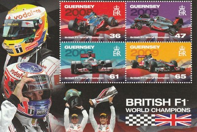
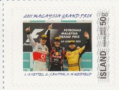

Jenson Button (2009)
Jenson Alexander Lyons Button MBE (born 19th January 1980) began karting aged 8 when his father bought him his first kart.
2000 : BMW Williams
Button secured his race seat in a shoot-out between himself and one other driver. At the time he was Britain's youngest ever F1 driver. Button's first season was impressive - eighth place with 12 points.
 |
|
 |
2001 : Benetton Renault
Williams had intended to use Button only until they could exercise their option to buy Juan Pablo Montoya, so Button was forced to look for another drive. This was a dismal season - the car was very uncompetitive and he was consistently outperformed by his teammate.
2002 : Renault F1 Team
The team was rebranded for the 2002 season and Button worked hard over the winter break to improve his performance, as a result Button's race pace was much better than before. Hoewever, it was announced mid-season that was to be replaced by Fernando Alonso.
 |
2003 - 2005 : BAR Honda
Button moved to BAR and faced early hostility from his new teammate Jacques Villeneuve. However, Button was reasonably successful with BAR - in 2004, Button came third in the drivers' championship behind the dominant Ferrari drivers and helped BAR to second place in the constructors' championship.
2006 - 2008 : Honda Racing F1 Team
At the end of the 2005 season Honda bought out BAR. The early part of the 2006 season proved difficult, but after a chaotic Hungarian Grand Prix, Button emerged as the winner - his first race win. For the next two seasons the Honda was not competitive.
2009 : Brawn GP
At the end of 2008, Honda quit F1; in early 2009, Ross Brawn completed the management buyout. Button had to take a large pay cut as part of the deal. Button dominated the early part of the season, benefiting from a controversial diffuser design - but the other teams did eventually catch up. However, it was enough for Button to secure the World Championship.
 |
 | |
2010 - 2014 : McLaren Mercedes
Button sought a fresh challenge for 2010 and so joined Mercedes alongside Lewis Hamilton. Button's time at McLaren was mixed - he was runner up in the championship in 2011.
|  |  |
 |
 |
 |
 |
2015 - 2017 : McLaren Honda
The switch to Honda engines proved to be a disaster for McLaren. Button was able to score a few points, but these seasons were dismal. In 2017, Button stepped down as a race driver, becoming instead an ambassador for the team. However, for the 2017 Monace Grand Prix, he substituted for Fernando Alonso (who was competing in the the Indianapolis 500) - Button retired from the race following an accident, this was his last ever F1 race and his association with McLaren concluded at the end of 2017.